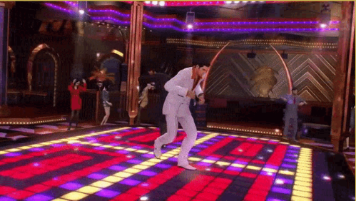

Yakuza: Like A Dragon is one of the longest Yakuza entries, with 15 chapters in total. It
also has the highest amount of
playable characters, with seven playable party members. There is a lot going on in Yakuza: Like A Dragon,
and this will
be a chapter summary of what happens in each of them. Optional substories are excluded, but here are the
main game features.

- Open world game
- The ultimate Japanese lifestyle
- 200+ hours of gameplay
|
| CPU |
AMD Ryzen 2600X |
| Graphics card |
GRT 970 / RX 5600 |
| RAM memory |
16Gb DDR4 |
| Storage |
40 Gb |